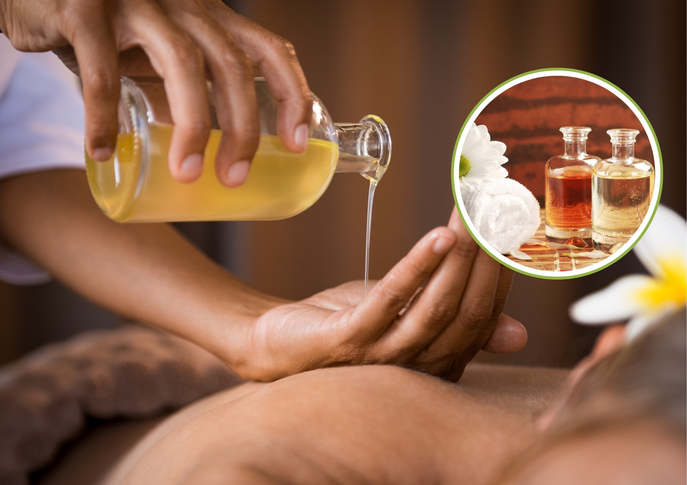
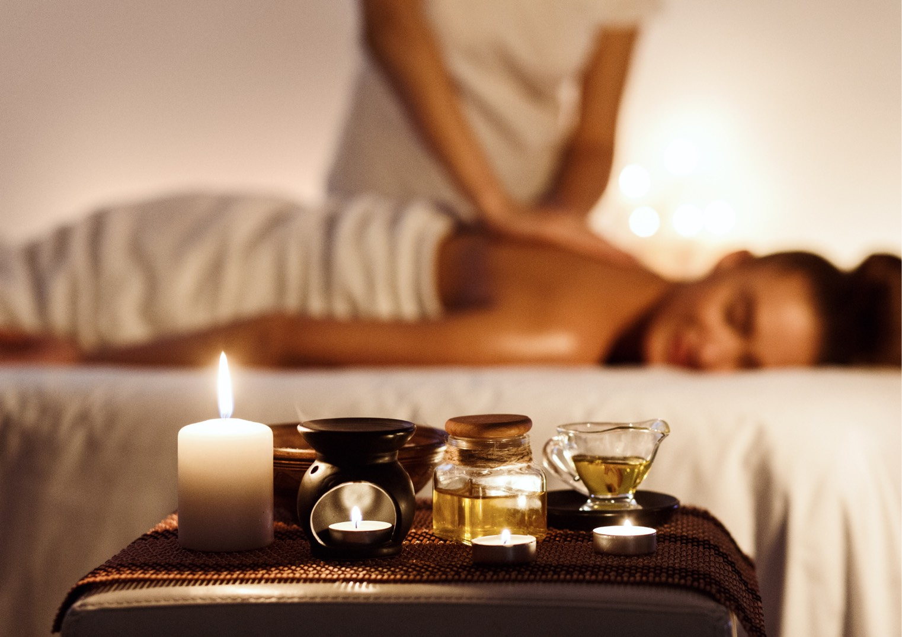
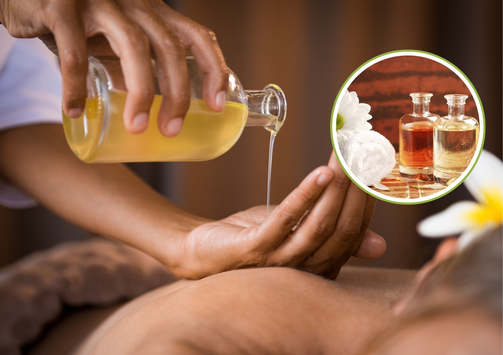
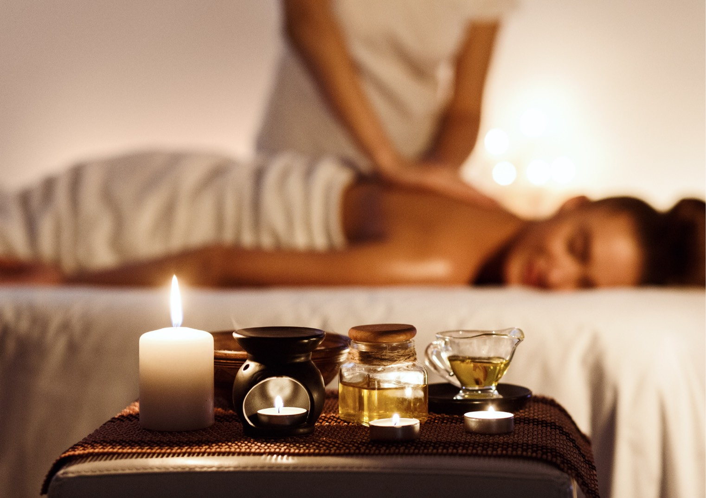
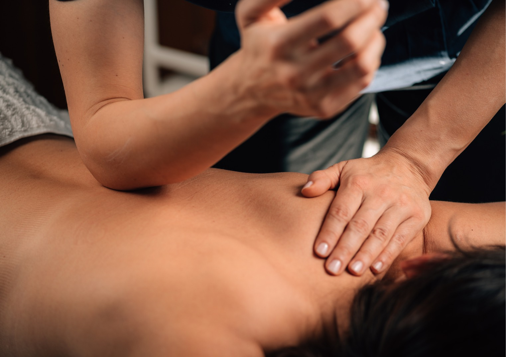
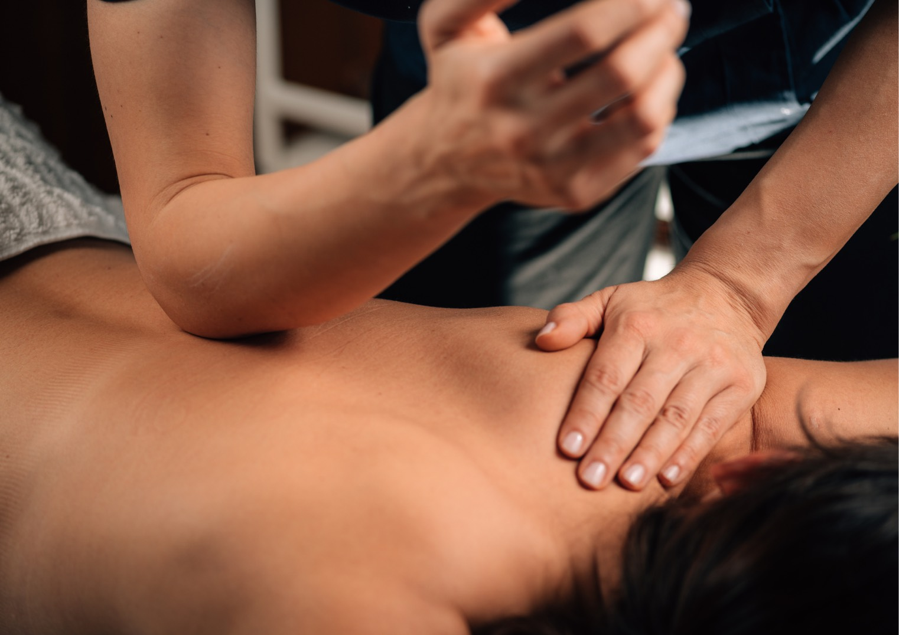

Massage à l'huile chaude
Il s'agit d'un massage utilisant des huiles essentielles tièdes qui aide à mieux détendre les muscles de la tension. Il combine également des techniques d'application de poids et de suivi des lignes qui aident à stimuler le cœur, améliorant ainsi le pompage du sang vers les extrémités.
 



Massage Thaïlandais Traditionnel
Le massage thaïlandais se concentre sur les pressions, le pétrissage, les étirements et les compressions. Il est communément appelé "massage ancien", utilisé non seulement pour soulager la douleur mais aussi pour la santé générale.
Massage VIP
Découvrez un massage d'aromathérapie relaxant, comprenant un bain dans un jacuzzi, qui vous aidera à vous détendre et à améliorer votre circulation sanguine.
Massage aux pierres chaudes
La "Thérapie par les pierres" vous aide à vous détendre en profondeur. Utilisation de roches volcaniques de basalte qui retiennent la chaleur, placées en divers points du corps.
Massage & Gommage corporel
Une série de soins visant à nettoyer votre corps ainsi que votre peau. Exfolie les cellules mortes et restaure une nouvelle peau.
Massage des tissus profonds
Le massage des tissus profonds ou massage par pétrissage est un massage qui utilise une pression sur des points spécifiques avec une force importante des doigts, des pouces, des paumes ou des coudes. Le poids est appliqué sur chaque point pour pétrir les tendons internes, soulageant ainsi la douleur chronique.
Massage d'aromathérapie
Soulage les muscles endoloris et apaise les tensions en allant au-delà du massage musculaire superficiel habituel.
 

Massage suédois
Les techniques incluent l'effleurage, le pétrissage, les percussions, les pressions et les vibrations. Se concentre sur la relaxation des muscles supérieurs et la réduction des douleurs musculaires.

Bain Marocain & Massage
Le "Hammam" commence par une première étape de vapeur pour déboucher les pores et éliminer les toxines. L'étape suivante est l'exfoliation pour aider les cellules de la peau à se renouveler plus rapidement, rendant la peau plus éclatante. Profitez ensuite d'un massage à l'huile après le bain marocain.
Massage Sportif
Le massage sportif convient aux athlètes professionnels qui souhaitent améliorer leurs performances et récupérer de blessures mineures, réduire la tension musculaire et aider à la relaxation.
Massage en salle pour couple
Passez du temps de qualité côte à côte dans notre salle de massage pour couples. Une expérience partagée pour régénérer votre esprit et votre corps.
Bain Jacuzzi avec massage
Il aide à réduire les douleurs, soulage le stress, améliore la circulation sanguine et aide à équilibrer les hormones dans le corps. Il aide également à illuminer la peau.